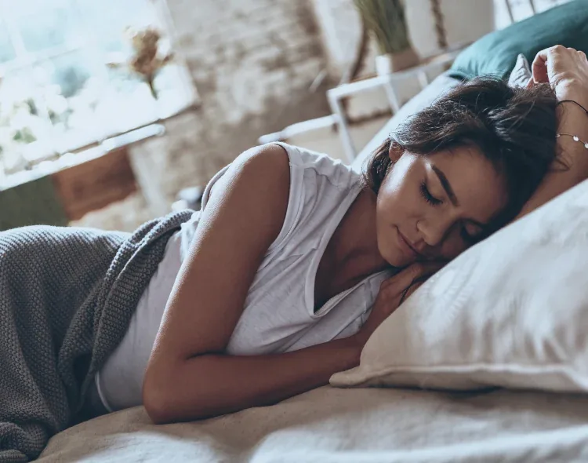

RESEARCH REPORT · SOTIR KICHUKOV
Read Full Publication →
Top 5 Cosmetic & Recovery Benefits of Bulgarian Black Sea Lye in ANCHIALO Gels
Discover the top five reasons athletes and active Australians use ANCHIALO Dual Magnesium Gels infused with Lake Pomorie Black Sea lye for post-training skin no...